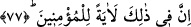

77. Hakîkaten bunda îmân edenler için bir ibret vardır.
“Hakîkaten bunda” bu kent kalıntılarının insanların gidip gelirken görebilecekleri bir
bölgede bulunmasında, Allah’a ve Rasûlü’ne “îmân edenler için” büyük “bir ibret
vardır.” Çünkü onlar, bunların başına gelen ve memleketlerini hâk ile yeksân eden
bütün azapların yaptıkları kötülükler yüzünden geldiğini bilirler. Onların dışındakiler
ise mezkûr azâbı, tesâdüflere ve tabîat olaylarındaki değişikliklere bağlarlar.
“Âyet (ibret)” kelimesinin yukarıda (75. âyette) çoğul olarak kullanıldıktan sonra bu
âyette tekil kılınması, burada görüldüğü belirtilen şeyin, yukarıdakinin aksine kıssanın
tamâmı değil, sâdece kalıntılar olması hasebiyledir.
Burhânü’l-Kur’ân’da der ki: “Kur’an’daki “âyât (ibretler)” lâfızları, delillerin çoğul
oluşuna; “âyet (ibret)” lâfızları ise, delillerin gösterdiği şeyin tekil oluşuna bağlıdır.
Ardından mü’minler, yâni Allah Teâlâ’nın birliğini ikrâr edenler zikredildiği zaman âyet
lâfzı da tekil olarak kullanılmıştır.”
Yukarıdaki âyetlerden çıkarılacak iki önemli husus vardır:
1- Ferâsetin övülmesidir. Ferâset, düşüncede isâbet etme melekesidir. Bir hadiste
şöyle buyrulmuştur: “Sizden önceki ümmetler arasında muhaddes kişiler vardı. Şâyet
benim ümmetimde de böyle birisi varsa, o da Ömer b. Hattâb’dır.”[80]
Muhaddes, içinden bir şey geçen ve bunu ferâsetiyle haber verdiğinde tıpkı dediği
gibi çıkan kişi demektir. Bunu kendisine bir nevi mele-i a‘lâ bildirmiş olmaktadır. Bu,
velîlerin menzillerinden büyük bir menzildir. Hz. Peygamber’in “Şâyed benim
ümmetimde de böyle birisi varsa” ifâdesi, bu hususta bir tereddüdü olduğunu
göstermez. Çünkü onun ümmeti, ümmetlerin en üstünüdür. Başka ümmetlerde
muhaddesler varsa, elbette bu ümmette de olacaktır. Peygamberimiz bu ifâdesiyle
Ömer’in faziletini pekiştirmeyi kasdetmiştir. Tıpkı “Benim bir arkadaşım varsa, o
falancadır.” ifâdesinde olduğu gibi. Bu ifâdeyle başka dostların bulunmadığı değil,
kâmil mânâdaki bir dostluğun sâdece bu kişide bulunduğu anlatılmak istenmektedir.
Bir hadiste şöyle buyrulmuştur: “Âlimlerin ferâsetinden korkun ki aleyhinizde
şâhidlik etmesinler. Allah da sizi bu şâhidlik yüzünden baş aşağı cehenneme atmasın!
Allah’a andolsun ki o âlimlerin gönüllerine bıraktığı ve gözlerine koyduğu kesin bir
gerçektir.”[81] Yine O (a.s.) şöyle buyurur: “Mü’minin ferâsetinden korkun. Çünkü o,
Allah’ın nûruyla bakar ve Allah’ın tevfîkıyle konuşur.” Hz. Peygamber (s.a.) daha
sonra: “İşte bunda ibret alanlar için işâretler vardır.” âyetini okudu.[82] Bahru’l-
ulûm’da böyle geçmektedir.
Anlatırlar ki Kutbu’l-ahyâr Hâce Abdulhâlık Gucdevânî (k.s.), bir gün ma‘rifetten
söz ediyordu. Ansızın zâhid görünümlü bir delikanlı çıkageldi. Hırka omuzunda,
seccâde arkasında bir köşeye oturdu. Bir zaman sonra ayağa kalktı ve şöyle dedi: “Hz.